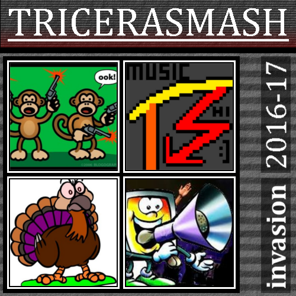

Overview
Tricerasmash, an account of Existn't, is a creator of music.
Mash has made one album before (Invasion), and another one is in the works (No Translation)
Invasion
This album, released on the 18th may, 2021, contains Mash's old Garageband + FL Studio songs made in 2016 and 2017. They were never released in album form back then.
| Song list (Invasion) | |
|---|---|
DjHunter |
Released october 2016 |
Revenge Of The Turkeys |
Released 12th november 2016 |
Penta Kill |
Released 9th march 2017 |
Draft |
Released 26th december 2016 |
Hard Wired |
Released 12th february 2017 |
Disco Dingo |
Released december 2016 |
Century |
Released 29th april 2017 |
Raytooth |
released 12th november 2017 |
Steampunk Train |
Released 5th november 2016 |
Computer Rap (Beep bop boop its yo boi the rapping computer) |
Released 18th may 2021 (made in 2017) |
Angels With Headphones (bonus track) |
Released 18th may 2021 |
Below: Invasion album cover. Click to open the album in bandcamp. 
No Translation
In progress... will be released in 2022